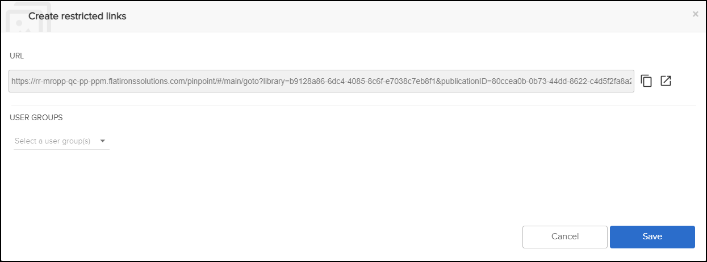

Not applicable for Pinpoint Standalone/Pinpoint Standalone Light.
An admin user can create restricted links for S1000D (Data Modules) or iSpec2200
(Tasks) and assign the links to user groups. The admin user must have permissions
for the Can create or remove restricted links privilege. This feature is
available for Pinpoint Server and Pinpoint Server Light. Users with the Can view
the content of restricted links privilege can view the links. Refer to the
Flatirons Access Control Manager User Guide for permission
details.
Note: The content must be released before you can create a restricted
link.
To create a restricted link, do these steps:
-
Select the
 Create Restricted Link icon from the
Content pane header.
The Create restricted links dialog appears, for example:
Create Restricted Link icon from the
Content pane header.
The Create restricted links dialog appears, for example:
-
Click Save.
After saving the restricted link. an admin user has these options:
- Click the
 Copy to clipboard icon to copy and send the
restrictive link to users with access to view the link.
Copy to clipboard icon to copy and send the
restrictive link to users with access to view the link. - Click the
 Open in a new tab icon to view the restricted
link in a new tab.
Open in a new tab icon to view the restricted
link in a new tab.
An admin user can manage restricted links by selecting the
 Restricted Link Management icon in the
Action Bar. Refer to Manage Restricted Links.
Restricted Link Management icon in the
Action Bar. Refer to Manage Restricted Links. - Click the